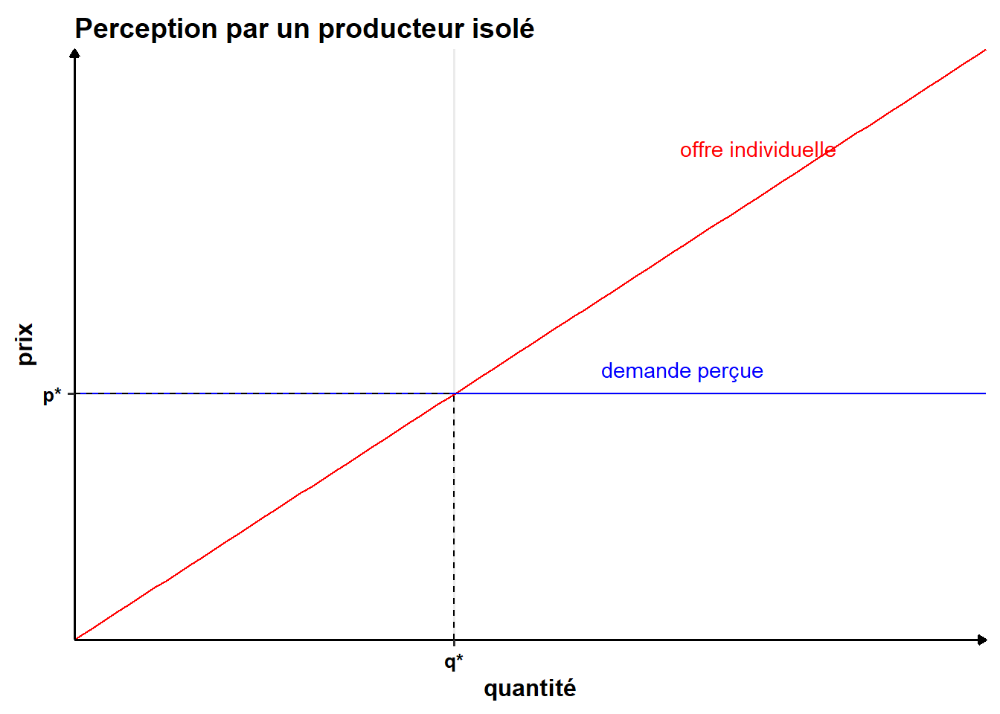

L’hypothèse d’atomicité indique que les agents individuels sont isolés au sein d’un très grand nombre d’autres agents. Ainsi, aucun agent n’a d’influence sur le prix en modifiant son comportement. Une conséquence direct est que le comportement des autres agents est perçu comme étant infiniment élastique. C’est-à-dire qu’un producteur sait qu’au prix de marché, il pourra vendre toute sa production, mais que s’il pratique un prix même légèrement plus élevé, il ne vendra rien. Il perçoit ainsi une demande infiniment élastique au prix, au niveau du prix \(p^*\).

Dans ce graphique, \(q^*\) rerpésente la production optimale de ce producteur quand il est seul.